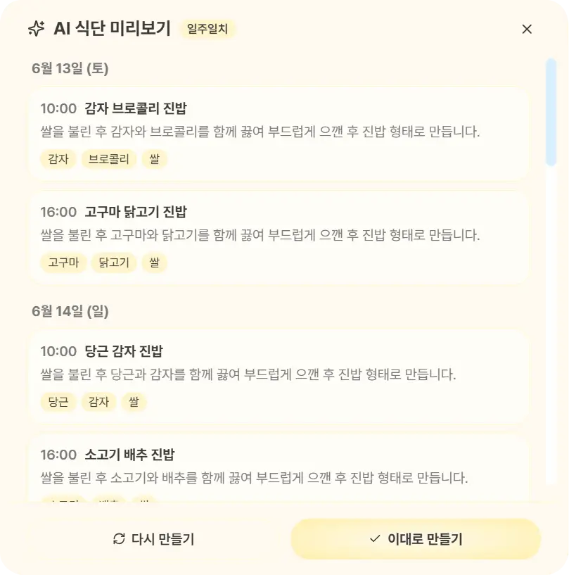
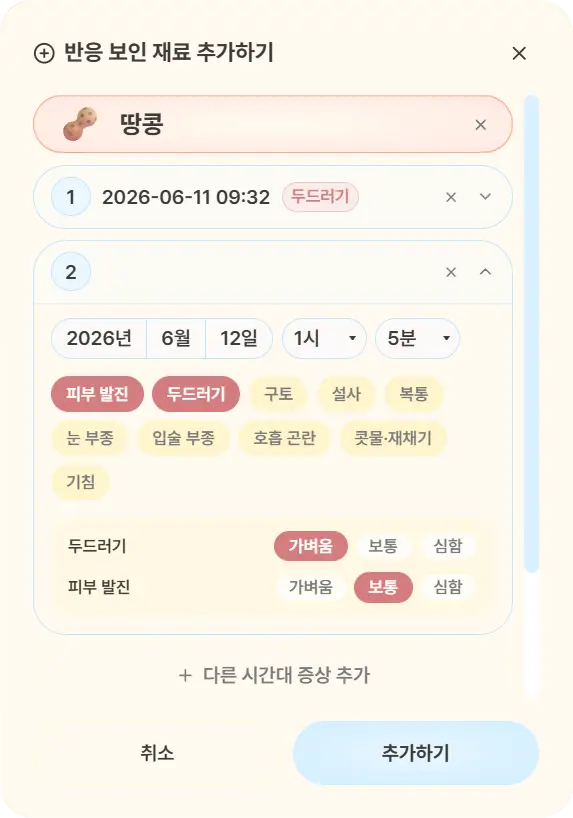

Web · AI · Led a team of 5 · May–Jun 2026Excellence Award (2nd place)
Mammacare
Records what a baby has eaten and any allergic reactions, and recommends AI meal plans that take the baby's age in months and allergy records into account. The plans also follow the allergy observation rule of introducing new ingredients one at a time. I led the team and was responsible for the backend's authentication, meal reminders and AI meal-plan logic.
- FastAPI
- PostgreSQL
- Azure OpenAI
- React
- FCM
- Child profile
The child's age in months and allergy records so far are the input to meal-plan generation.
- Ingredient shortlist
Shortlisting ingredients and choosing substitutes, once left to the prompt, were moved into code. Ingredients are filtered first by age and allergy records.
- Meal generation
Azure OpenAI is called with JSON-format responses. Meal plans that the rules fully determine are built without calling the model.
- Result correction
When the model returns an ingredient outside the shortlist, code swaps in an approved one. Confirmed allergens were already removed from the shortlist before the model call.
Does every meal plan need an AI call?
No. Plans that the rules fully determine are built in code without calling the model, and when the model returns an ingredient outside the shortlist, code swaps in an approved one. I also moved the ingredient shortlist out of the prompt and into code.


The final team project of Microsoft AI Software Academy (May–Jun 2026, on Azure). It received the Excellence Award (2nd place).